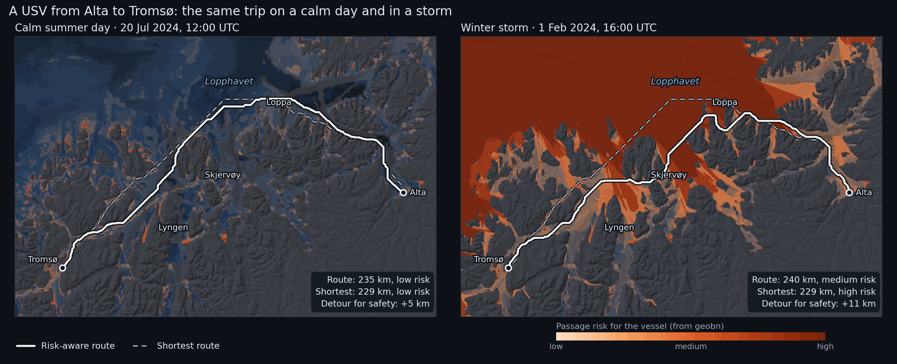

Alta → Tromsø — Routing a USV in Calm Weather and Storm
Location: Troms and Finnmark, northern Norway (69.45°N–70.65°N, 18.4°E–23.6°E)
A small unmanned surface vessel (USV), 5–10 m long, has to sail from Alta to Tromsø. The trip goes out Altafjorden, past the islands of Stjernøya and Loppa, across Lopphavet (about 70 km of open sea on the border between Troms and Finnmark), past Skjervøy and the mouth of Lyngen, and on to Tromsø. Much like a car's satnav routes around traffic jams, the boat's planner routes around shallow rocks, busy shipping lanes and big waves.
geobn provides the map the planner uses. It combines the sea depth, ship traffic and the weather into a probability of trouble for every 250 m pixel of the coast. The example plans the same trip for two real days:
- A calm summer day (20 July 2024). The boat takes nearly the shortest way, along the outer side of the islands.
- A winter storm (Ingunn, 1 February 2024), with 9 m waves and 23 m/s wind from the west-northwest in Lopphavet. The open sea is the riskiest part of the map. The boat shelters behind Loppa, crosses the open water where it is narrow, and follows the sounds after Skjervøy. The route is longer but has less risk.

The dashed line is the shortest route; the solid line is the route that balances distance
against risk. The colour is geobn's passage risk: the expected value of usv_risk on a scale
where low is 0, medium 0.5 and high 1.
What it demonstrates
- The chain from data to decision: data sources → Bayesian network → risk map → route
- Reading MET Norway's model archives (wave, ocean and weather models) through a small
custom
DataSourcein the example, with the same disk cache as the built-in sources MosaicSourcewith a fallback for every archive layer, and a provenance report saying which source supplied each layerDerivedSourcefor elevation → depth, kelvin → °C and a wave estimate for sheltered waterfreeze()for the static layers andprecompute(), so each new weather situation costs a table lookup- Route planning outside the library, from the posterior of the risk node
- The precomputed table used outside Python: an interactive map runs the model in the browser while you set the weather with sliders
Bayesian network structure
water_depth ─┬────────────────────────► grounding_risk ──┐
wave_height ─┤ (breaking waves in shallows) │
├──────────────► sea_state_risk ─────────────┼──► usv_risk
current_speed┘ │
vessel_traffic ───────────────► collision_risk ───────────┤
air_temperature ─┬────────────► icing_risk ───────────────┘
wind_speed ──────┘
Six inputs, four risk mechanisms and one query node, usv_risk with states
{low, medium, high}. The probabilities in usv_passage.bif are expert judgement for a
vessel of this size, with the reasoning written as a comment above each table:
- Grounding is likely in water under 5 m in any weather. In 5–20 m of water it depends on the waves: rough and severe seas break over shoals. This keeps the inner leads from being free in a storm, so the planner has a real trade-off between exposed and shallow water.
- Sea state becomes a problem above about 2.5 m significant wave height and dangerous above 4.5 m. Strong currents make each state worse.
- Collision grows with ship traffic density.
- Icing from freezing spray needs air below about −2 °C and wind above about 10 m/s.
usv_riskis driven by the worst mechanism, with the others adding a little.
Data sources
| Node | Source | Details |
|---|---|---|
water_depth |
DerivedSource over WCSSource (EMODnet Bathymetry) |
~115 m; land becomes NaN, so no route can cross it |
vessel_traffic |
WCSSource (EMODnet Human Activities) |
vessel density, all ship types, 2023, hours per km² per month, ~1 km |
wave_height |
WW3 4 km wave model archive (MET Norway), scaled by exposure | see Waves in sheltered water |
current_speed |
NorKyst v3 800 m ocean model archive (MET Norway) | surface current speed from the east and north components |
wind_speed |
MEPS 2.5 km weather model archive (MET Norway) | 10 m wind speed |
air_temperature |
MEPS 2.5 km weather model archive (MET Norway) | 2 m temperature |
All sources are free and need no API key. EMODnet data and MET Norway data are published under CC BY 4.0.
Annotated walkthrough
1. A projected grid
CRS = "EPSG:32634" # UTM zone 34N
RESOLUTION = 250.0 # metres
EXTENT = (398_000, 7_704_500, 602_000, 7_840_500) # 816 × 544 pixels
bn = geobn.load("usv_passage.bif")
bn.set_grid(CRS, RESOLUTION, EXTENT)
A projected CRS keeps pixel sizes, and therefore route lengths, in metres.
2. Static layers
elevation = geobn.WCSSource(
url="https://ows.emodnet-bathymetry.eu/wcs", layer="emodnet:mean", version="2.0.1",
valid_range=(-1000.0, 3000.0), cache_dir=CACHE_DIR,
)
bn.set_input("water_depth", geobn.DerivedSource(depth_below_surface, elevation))
vessel_traffic = geobn.WCSSource(
url="https://ows.emodnet-humanactivities.eu/wcs",
layer="emodnet__vesseldensity_allavg",
extra_subsets=['time("2023-01-01T00:00:00.000Z")'],
cache_dir=CACHE_DIR,
)
bn.set_input("vessel_traffic", geobn.MosaicSource(
[vessel_traffic, geobn.ConstantSource(0.0)], names=["EMODnet", "none recorded"],
))
The EMODnet vessel density coverage has a time axis with one value per year, which
extra_subsets selects.
3. Weather from the MET Norway archives
MET Norway's model archives on thredds.met.no are NetCDF files on
projected model grids: rotated pole for WW3, Lambert conformal for MEPS and polar
stereographic for NorKyst. met_archive.py defines MetArchiveSource, a DataSource that
asks OPeNDAP for the block of the model grid covering the study area, reads the plain-text
response with numpy and returns it on the model's own projection. geobn then reprojects it
like any other raster. The source implements _fetch and _cache_key (see
Data Sources), so cache_dir works as it does for the built-in
sources.
wind_speed = geobn.MosaicSource(
[MetArchiveSource(meps_file(t), ("x_wind_10m", "y_wind_10m"), t,
combine=np.hypot, name="wind_speed", cache_dir=CACHE_DIR),
geobn.ConstantSource(sc.wind_speed)],
names=["MEPS", "scenario constant"], on_error="skip",
)
Every weather layer is a mosaic that ends in a constant for the scenario. With
on_error="skip", an unreachable archive gives a UserWarning and the constant takes over.
The run prints which source supplied each layer:
── Winter storm: 01 Feb 2024 16:00 UTC ──────────────────────
offshore waves : WW3 4 km 100%
current_speed : NorKyst 800 m 89%, NorKyst 800 m (nearest cell) 9%, assumed 0.2 m/s 3%
wind_speed : MEPS 100%
wind direction : MEPS 100%
air_temperature : MEPS 100%
Current speed is read twice from the same cache entry. Bilinear resampling leaves a gap along
the coast wherever a model cell has a land neighbour, and the second read, with
resampling="nearest", fills most of it.
4. Waves in sheltered water
WW3 describes the open sea well, but its 4 km cells do not resolve the sounds: a cell either
has no value there or covers water and islands alike. waves.py brings the offshore sea
state onto the 250 m grid according to how exposed each pixel is:
- WW3 is extended into the gaps with the nearest model value and smoothed, which gives the offshore wave height next to every pixel.
- The effective fetch of each pixel is measured by casting rays upwind, at the wind direction and ±12°, ±24° and ±36°, until they reach land.
- The offshore wave height is scaled by
sqrt(fetch / 50 km), capped at 1, because fetch-limited waves grow with the square root of the fetch. Open water with 50 km of fetch or more keeps the WW3 value. - Where a long sound raises more wind sea of its own than that, the JONSWAP fetch-limited height is used instead.
offshore_hs = geobn.MosaicSource(
[geobn.DerivedSource(spread_offshore, MetArchiveSource(ww3_file(t), "hs", t, ...)),
geobn.ConstantSource(sc.hs_offshore)],
names=["WW3 4 km", "scenario constant"], on_error="skip",
)
wave_height = geobn.DerivedSource(
wave_height_250m, offshore_hs, elevation, wind_speed, wind_from
)
This is an approximation. It ignores refraction, diffraction around headlands and wave–current interaction, so its values are estimates of exposure. It makes the wave field vary in space, which the planner needs: with the same wave height everywhere, a storm would raise the risk of every route alike and leave the choice of route unchanged.
5. Freeze, precompute, infer
for node, bp in BREAKPOINTS.items():
bn.set_discretization(node, bp)
bn.freeze("water_depth", "vessel_traffic")
bn.precompute(query=["usv_risk"]) # 4·4·3·3·3·3 = 1,296 combinations
for sc in SCENARIOS:
for node, src in weather_sources(sc, sc.time, elevation)[0].items():
bn.set_input(node, src)
result = bn.infer(query=["usv_risk"])
risk = result.expected_value("usv_risk", {"low": 0.0, "medium": 0.5, "high": 1.0})
Only the weather inputs change between scenarios. The frozen layers are fetched and
discretised once, and every infer() is a lookup in the precomputed table.
6. From risk map to route
Route planning is not part of geobn. routing.py builds a graph with one node per water
pixel, joined to its eight neighbours, and runs Dijkstra's algorithm from
scipy.sparse.csgraph. A step costs its length times
so a kilometre of certain high risk costs as much as 9 km of risk-free water. With
K_RISK = 0 the planner returns the shortest route. Land and pixels without data have no
edges, so no route can cross them.
cost = np.where(water, 1.0 + K_RISK * risk, np.nan)
path, length_m, _ = plan_route(cost, start, goal, pixel_size=250.0)
7. The interactive map
output/alta_tromso_map.html is a Leaflet map with sliders for the offshore wave height, the
wind speed, the wind direction and the air temperature, starting at Ingunn's values. Moving a
slider recomputes the passage risk of every pixel and plans the risk-aware route again; the
shortest route stays where it is. Dragging a slider shows how the
route leaves the open water as the waves build, and how the sheltered side moves when the wind
turns.
The browser runs the same model as the script, without Python or pgmpy. webmap.py exports:
- geobn's precomputed table, as the expected
usv_riskand P(high) for each of the 1,296 combinations of input states, read withbn.query_batch(); - the states of the inputs that the sliders do not change: water depth, ship traffic and surface current (the calm-day NorKyst field);
- the effective fetch of every pixel for 16 wind directions, from which the page computes the
wave height with the formula in
waves.py; - the breakpoints, the route cost and the start and goal.
webmap.js discretises the slider values and the wave heights with the same breakpoints,
looks up the risk, and runs Dijkstra's algorithm on the same graph as routing.py. The wind,
the temperature and the offshore wave height apply to the whole area, and the offshore wave
height is then reduced in sheltered water, which is the calculation the script falls back to
when the weather archives cannot be reached. With the same inputs, the page and the Python
code give the same risk map and the same route.
Open the interactive map. The page is a single file of about 2.5 MB. The base maps are Kartverket's greyscale and topographic maps, its nautical chart and OpenStreetMap; the risk layer is reprojected to Web Mercator so it lines up with them.
Scenario dates
The dates come from a scan of the WW3 archive at a point in Lopphavet (70.40°N, 21.0°E), every three days from October 2023 to March 2026, winters and summers.
| Scenario | Time (UTC) | In Lopphavet | Why |
|---|---|---|---|
| Calm | 20 July 2024, 12:00 | Hs 0.25 m, wind 1.4 m/s | the calmest summer midday of 2024 in the archive |
| Storm | 1 February 2024, 16:00 | Hs 9 m, wind 23 m/s from WNW | extreme weather Ingunn, MET info 25/2024 |
Ingunn is a named extreme-weather low, not a polar low. The scan found higher waves on 29 January 2024, with wind from the west-southwest. Ingunn was chosen because it is documented by MET Norway and because its wind blew from the direction Lopphavet is most open to.
Key outputs
output/scenarios.png: the two scenarios side by sideoutput/readme_animation.gif: the route as the weather worsens, from 0.5 m to 8 m offshore waves with the wind from the northwest (the README image)output/alta_tromso_map.html: the interactive map with weather sliders, described in section 7output/storm_timelapse.gif: Ingunn arriving hour by hour on 1 February, with the route planned again for every houroutput/<scenario>/usv_risk.tif: P(low), P(medium), P(high) and entropy;risk_score.tif: the expected risk used by the planneroutput/routes_<scenario>.geojson: the shortest and risk-aware routes, with length, mean risk and the largest P(high) along each
The run ends with a summary:
scenario route length mean risk max P(high)
calm shortest 229 km 0.18 0.35
calm risk_aware 235 km 0.13 0.35
storm shortest 229 km 0.59 0.91
storm risk_aware 240 km 0.42 0.91
The storm route still reaches a P(high) of 0.91 where it crosses the open water south of Loppa. Every route between the two harbours crosses some open water.
Limitations
- The probabilities in the network are expert judgement, not fitted to incidents.
- The narrowest water on either route is about 5 pixels (1.3 km) wide. Sounds narrower than two pixels (500 m) cannot be resolved at this resolution, and the harbours themselves are one or two pixels wide; the start and goal are moved to the nearest water pixel.
- EMODnet depths at 115 m, resampled to 250 m, do not show individual rocks. The
very_shallowstate stands in for them. - Current speed is the surface current of an 800 m model; tidal streams in narrow sounds are stronger than it shows.
How to run
The first run downloads the bathymetry, the vessel density and about 200 small OPeNDAP
subsets from thredds.met.no, which takes about five minutes; most of it is for the hourly
timelapse.
Everything is cached in examples/alta_tromso/cache/, and later runs make no requests.
Add --no-timelapse to skip the GIF.